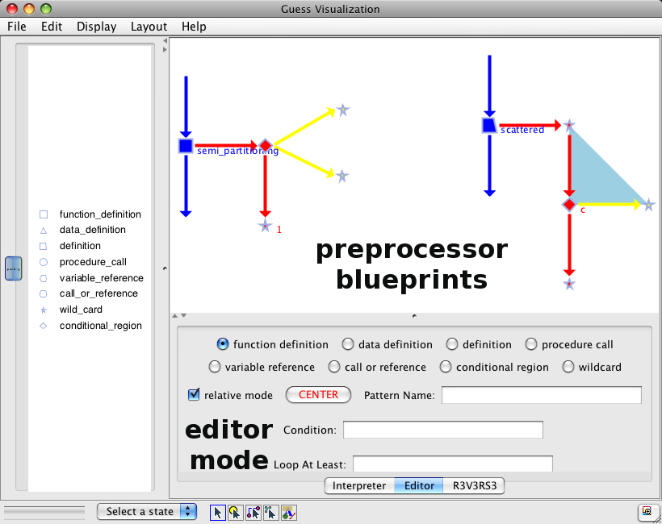
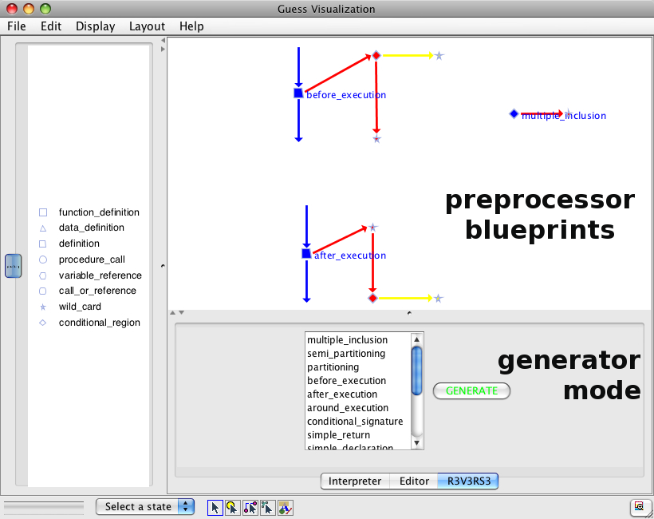

Recent News
- [August 7, 2009] Website published!
Screenshots


Functionality
R3V3RS3 is a framework which provides an interactive GUI to specify patterns of conditional compilation usage in C code ("preprocessor blueprints") and a Perl script generator to detect all occurrences of these patterns. It can be used to evaluate the potential of extracting conditional compilation usage into aspects, to enforce programming conventions or to keep track of conditional compilation usage in general. R3V3RS3 is built on the Fetch reverse-engineering framework.
Publications
- ADAMS, B., DE MEUTER, W., TROMP, H. and HASSAN, A. E. (2009). Can we Refactor Conditional Compilation into Aspects?, in Proceedings of the 8th ACM international conference on Aspect-oriented Software Development, AOSD (Charlottesville, VA, US), pages 243-254, ISBN-ISSN: 978-1-60558-442-3, ACM, March 2009. (Acceptance ratio: 19/86=22%) BibTeX (Most Influential Paper Award)
- ADAMS, B., HASSAN, A. E., TROMP, H. and DE MEUTER, W. (2009). R3V3RS3: Querying for Syntactical Patterns of Conditional Compilation Usage (demo), in Proceedings of the 8th ACM international conference on Aspect-oriented Software Development, AOSD (Charlottesville, VA, US), March 2009. BibTeX
- ADAMS, B. (2008). Co-evolution of Source Code and the Build System: Impact on the Introduction of AOSD in Legacy Systems, PhD dissertation, 353 p., ISBN 978-90-8578-203-2, Ghent University, Belgium, May 2008. BibTeX
- ADAMS, B., VAN ROMPAEY, B., GIBBS, C., COADY, Y. and TROMP, H. (2008). Aspect mining in the Presence of the C Preprocessor, in Proceedings of the 4th Linking Aspect Technology and Evolution Workshop, LATE (Brussels, Belgium), pages 1-6, ISBN: 978-1-60558-147-7, ACM, April 2008. BibTeX